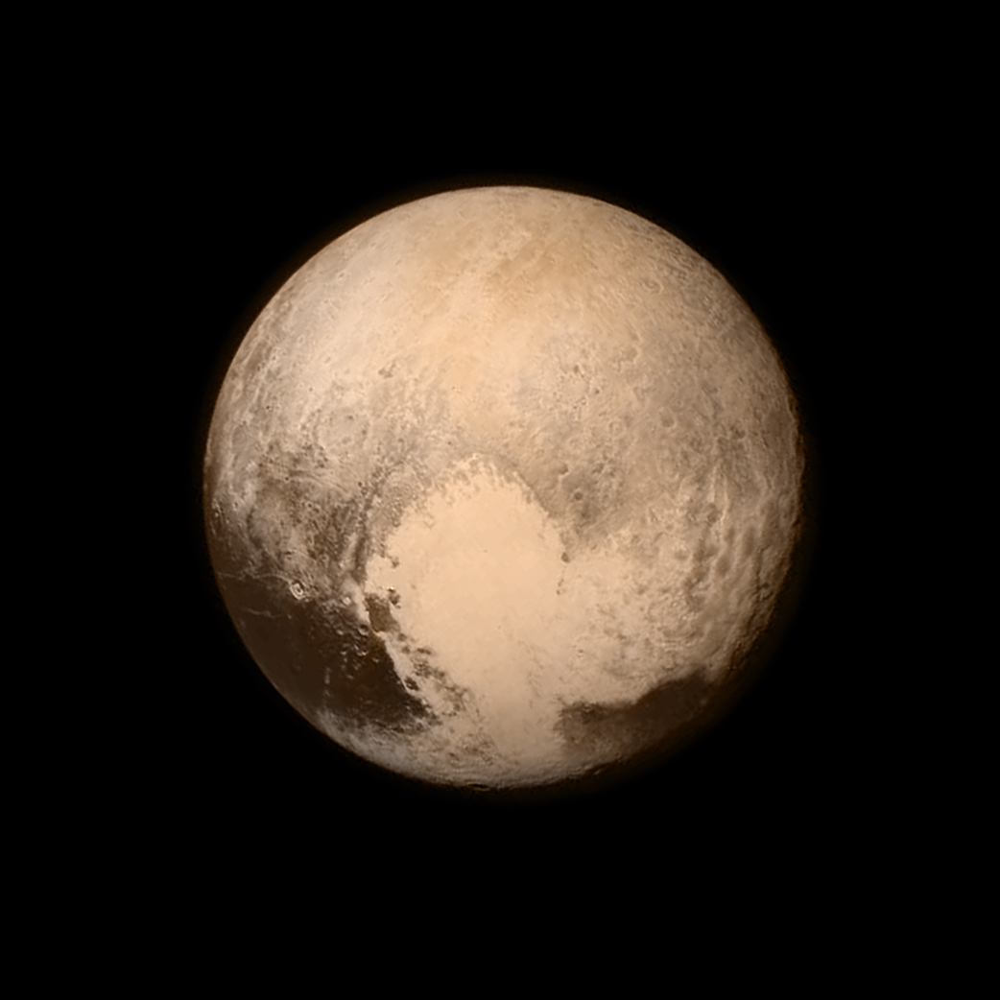

Beyond The Earth
EARTH

Earth is the third planet from the Sun and the only astronomical object known to harbor life. While large amounts of water can be found throughout the Solar System, only Earth sustains liquid surface water. About 71% of Earth's surface is made up of the ocean, dwarfing Earth's polar ice, lakes and rivers. The remaining 29% of Earth's surface is land, consisting of continents and islands. Earth's surface layer is formed of several slowly moving tectonic plates, interacting to produce mountain ranges, volcanoes and earthquakes. Earth's liquid outer core generates the magnetic field that shapes Earth's magnetosphere, deflecting destructive solar winds. Earth's atmosphere consists mostly of nitrogen and oxygen. More solar energy is received by tropical regions than polar regions and is redistributed by atmospheric and ocean circulation. Water vapor is widely present in the atmosphere and forms clouds that cover most of the planet. Greenhouse gases in the atmosphere like carbon dioxide (CO2) trap a part of the energy from the Sun close to the surface. A region's climate is governed by latitude, but also by elevation and proximity to moderating oceans. Severe weather, such as tropical cyclones, thunderstorms, and heatwaves, occurs in most areas and greatly impacts life. Earth is an ellipsoid with a circumference of about 40,000 km. It is the densest planet in the Solar System. Of the four rocky planets, it is the largest and most massive. Earth is about eight light minutes away from the Sun and orbits it, taking a year (about 365.25 days) to complete one revolution. Earth rotates around its own axis in a day. Earth's axis of rotation is tilted with respect to its orbital plane with the Sun, producing seasons. Earth is orbited by one permanent natural satellite, the Moon, which orbits Earth at 380,000 km (1.3 light seconds) and is roughly a quarter as wide as Earth. The Moon always faces the Earth with the same side through tidal locking and causes tides, stabilizes Earth's axis and gradually slows its rotation. Earth formed over 4.5 billion years ago. During the first billion years of Earth's history, the ocean formed and then life developed within it. Life spread globally and began to affect Earth's atmosphere and surface, leading to Earth's Great Oxidation Event two billion years ago. Humans emerged 300,000 years ago, and have reached a population of almost 8 billion today. Humans depend on Earth's biosphere and natural resources for their survival, but have increasingly impacted Earth's environment. Today, humanity's impact on Earth's climate, soils, waters and ecosystems is unsustainable, threatening people's lives and causing widespread extinction of other life.
SUN

The Sun is the star at the center of the Solar System. It is a nearly perfect ball of hot plasma, heated to incandescence by nuclear fusion reactions in its core, radiating the energy mainly as visible light, ultraviolet light, and infrared radiation. It is by far the most important source of energy for life on Earth. Its diameter is about 1.39 million kilometers (864,000 miles), or 109 times that of Earth. Its mass is about 330,000 times that of Earth, and it accounts for about 99.86% of the total mass of the Solar System. Roughly three quarters of the Sun's mass consists of hydrogen (~73%); the rest is mostly helium (~25%), with much smaller quantities of heavier elements, including oxygen, carbon, neon and iron. According to its spectral class, the Sun is a G-type main-sequence star (G2V). As such, it is informally, and not completely accurately, referred to as a yellow dwarf (its light is closer to white than yellow). It formed approximately 4.6 billion years ago from the gravitational collapse of matter within a region of a large molecular cloud. Most of this matter gathered in the center, whereas the rest flattened into an orbiting disk that became the Solar System. The central mass became so hot and dense that it eventually initiated nuclear fusion in its core. It is thought that almost all stars form by this process. The Sun's core fuses about 600 million tons of hydrogen into helium every second, converting 4 million tons of matter into energy every second as a result. This energy, which can take between 10,000 and 170,000 years to escape the core, is the source of the Sun's light and heat. When hydrogen fusion in its core has diminished to the point at which the Sun is no longer in hydrostatic equilibrium, its core will undergo a marked increase in density and temperature while its outer layers expand, eventually transforming the Sun into a red giant. It is calculated that the Sun will become sufficiently large to engulf the current orbits of Mercury and Venus, and render Earth uninhabitable – but not for about five billion years. After this, it will shed its outer layers and become a dense type of cooling star known as a white dwarf, and no longer produce energy by fusion, but still glow and give off heat from its previous fusion. The enormous effect of the Sun on Earth has been recognized since prehistoric times. The Sun was thought of by some cultures as a deity. The synodic rotation of Earth and its orbit around the Sun are the basis of some solar calendars. The predominant calendar in use today is the Gregorian calendar which is based upon the standard 16th Century interpretation that the Sun's observed movement is primarily due to it actually moving.
MERCURY
Mercury is the smallest planet in the Solar System and the closest to the Sun. Its orbit around the Sun takes 87.97 Earth days, the shortest of all the Sun's planets. It is named after the Roman god Mercurius (Mercury), god of commerce, messenger of the gods, and mediator between gods and mortals, corresponding to the Greek god Hermes (Ἑρμῆς). Like Venus, Mercury orbits the Sun within Earth's orbit as an inferior planet, and its apparent distance from the Sun as viewed from Earth never exceeds 28°. This proximity to the Sun means the planet can only be seen near the western horizon after sunset or the eastern horizon before sunrise, usually in twilight. At this time, it may appear as a bright star-like object, but is more difficult to observe than Venus. From Earth, the planet telescopically displays the complete range of phases, similar to Venus and the Moon, which recurs over its synodic period of approximately 116 days. Mercury rotates in a way that is unique in the Solar System. It is tidally locked with the Sun in a 3:2 spin–orbit resonance, meaning that relative to the fixed stars, it rotates on its axis exactly three times for every two revolutions it makes around the Sun. As seen from the Sun, in a frame of reference that rotates with the orbital motion, it appears to rotate only once every two Mercurian years. An observer on Mercury would therefore see only one day every two Mercurian years. Mercury's axis has the smallest tilt of any of the Solar System's planets (about 1⁄30 degree). Its orbital eccentricity is the largest of all known planets in the Solar System;[b] at perihelion, Mercury's distance from the Sun is only about two-thirds (or 66%) of its distance at aphelion. Mercury's surface appears heavily cratered and is similar in appearance to the Moon's, indicating that it has been geologically inactive for billions of years. Having almost no atmosphere to retain heat, it has surface temperatures that vary diurnally more than on any other planet in the Solar System, ranging from 100 K (−173 °C; −280 °F) at night to 700 K (427 °C; 800 °F) during the day across the equatorial regions. The polar regions are constantly below 180 K (−93 °C; −136 °F). The planet has no known natural satellites. Two spacecraft have visited Mercury: Mariner 10 flew by in 1974 and 1975; and MESSENGER, launched in 2004, orbited Mercury over 4,000 times in four years before exhausting its fuel and crashing into the planet's surface on April 30, 2015.The BepiColombo spacecraft is planned to arrive at Mercury in 2025.
VENUS

Venus is the second planet from the Sun. It is named after the Roman goddess of love and beauty. As the brightest natural object in Earth's night sky after the Moon, Venus can cast shadows and can be visible to the naked eye in broad daylight. Venus's orbit is smaller than that of Earth, and thus can be seen near the Sun in the morning or evening. Venus orbits the Sun every 224.7 Earth days. It has a synodic day length of 117 Earth days and a sidereal rotation period of 243 Earth days. As a consequence, it takes longer to rotate about its axis than any other planet in the Solar System, and does so in the opposite direction to all but Uranus. This means that the Sun rises from its western horizon and sets in its east. Venus does not have any moons, a distinction it shares only with Mercury among the planets in the Solar System. Venus is a terrestrial planet and is sometimes called Earth's "sister planet" because of their similar size, mass, proximity to the Sun, and bulk composition. It is radically different from Earth in other respects. It has the densest atmosphere of the four terrestrial planets, consisting of more than 96% carbon dioxide. The atmospheric pressure at the planet's surface is about 92 times the sea level pressure of Earth, or roughly the pressure at 900 m (3,000 ft) underwater on Earth. Even though Mercury is closer to the Sun, Venus has the hottest surface of any planet in the Solar System, with a mean temperature of 737 K (464 °C; 867 °F). Venus is shrouded by an opaque layer of highly reflective clouds of sulfuric acid, preventing its surface from being seen from space in light. It may have had water oceans in the past, but these would have vaporized as the temperature rose under a runaway greenhouse effect. The water has probably photodissociated, and the free hydrogen has been swept into interplanetary space by the solar wind because of the lack of a planetary magnetic field. As one of the brightest objects in the sky, Venus has been a major fixture in human culture for as long as records have existed. It has been made sacred to gods of many cultures, and has been a prime inspiration for writers and poets as the "morning star" and "evening star". Venus was the first planet to have its motions plotted across the sky, as early as the second millennium BC. Its proximity to Earth has made Venus a prime target for early interplanetary exploration. It was the first planet beyond Earth visited by a spacecraft (Venera 1 in 1961), and the first to be successfully landed on (by Venera 7 in 1970). Venusian thick clouds render observation of its surface impossible in visible spectrum, and the first detailed maps did not emerge until the arrival of the Magellan orbiter in 1991. Plans have been proposed for rovers or more complex missions, but they are hindered by Venus's hostile surface conditions. The possibility of life on Venus has long been a topic of speculation, and in recent years has received active research.
MARS
Mars is the fourth planet from the Sun and the second-smallest planet in the Solar System, being larger than only Mercury. In English, Mars carries the name of the Roman god of war and is often referred to as the "Red Planet". The latter refers to the effect of the iron oxide prevalent on Mars's surface, which gives it a striking reddish appearance in the sky.Mars is a terrestrial planet with a thin atmosphere, with surface features such as impact craters, valleys, dunes, and polar ice caps. The days and seasons are comparable to those of Earth, because the rotation period as well as the tilt of the rotational axis relative to the ecliptic plane are similar. Mars is the site of Olympus Mons, the largest volcano and highest known mountain on any planet in the Solar System, and of Valles Marineris, one of the largest canyons in the Solar System. The smooth Borealis basin in the Northern Hemisphere covers 40% of the planet and may be a giant impact feature.Mars has two moons, Phobos and Deimos, which are small and irregularly shaped. Mars has been explored by several uncrewed spacecraft. Mariner 4 was the first spacecraft to visit Mars; launched by NASA on 28 November 1964, it made its closest approach to the planet on 15 July 1965. Mariner 4 detected the weak Martian radiation belt, measured at about 0.1% that of Earth, and captured the first images of another planet from deep space. The latest spacecraft to successfully land on Mars are CNSA's Tianwen-1 lander and Zhurong rover, landed on 14 May 2021. The Zhurong rover was successfully deployed on 22 May 2021, which makes China the second country to successfully deploy a rover on Mars, after the United States. There are investigations assessing the past habitability of Mars, as well as the possibility of extant life. Astrobiology missions are planned, such as the European Space Agency's Rosalind Franklin rover. Liquid water on the surface of Mars cannot exist due to low atmospheric pressure, which is less than 1% of the atmospheric pressure on Earth. Both of Mars's polar ice caps appear to be made largely of water. Mars can easily be seen from Earth with the naked eye, as can its reddish coloring. Its apparent magnitude reaches −2.94, which is surpassed only by Venus, the Moon and the Sun.[12] Optical ground-based telescopes are typically limited to resolving features about 300 kilometres (190 mi) across when Earth and Mars are closest because of Earth's atmosphere.
JUPITER

Jupiter is the fifth planet from the Sun and the largest in the Solar System. It is a gas giant with a mass more than two and a half times that of all the other planets in the Solar System combined, but slightly less than one-thousandth the mass of the Sun. Jupiter is the third brightest natural object in the Earth's night sky after the Moon and Venus. People have been observing it since prehistoric times; it was named after the Roman god Jupiter, the king of the gods, because of its observed size. Jupiter is primarily composed of hydrogen, but helium constitutes one-quarter of its mass and one-tenth of its volume. It likely has a rocky core of heavier elements, but, like the other giant planets, Jupiter lacks a well-defined solid surface. The ongoing contraction of its interior generates heat greater than the amount received from the Sun. Because of its rapid rotation, the planet's shape is an oblate spheroid; it has a slight but noticeable bulge around the equator. The outer atmosphere is visibly segregated into several bands at different latitudes, with turbulence and storms along their interacting boundaries. A prominent result of this is the Great Red Spot, a giant storm known to have existed since at least the 17th century when telescopes first saw it. Surrounding Jupiter is a faint planetary ring system and a powerful magnetosphere. Jupiter's magnetic tail is nearly 800 million km (5.3 AU; 500 million mi) long, covering the entire distance to Saturn's orbit. Jupiter has 80 known moons and possibly many more,[6] including the four large Galilean moons discovered by Galileo Galilei in 1610: Io, Europa, Ganymede, and Callisto. Io and Europa are about the size of Earth's Moon; Callisto is almost the size of the planet Mercury, and Ganymede is even larger. Pioneer 10 was the first spacecraft to visit Jupiter, making its closest approach to the planet in December 1973. Jupiter has since been explored on several occasions by robotic spacecraft, beginning with the Pioneer and Voyager flyby missions from 1973 to 1979, and later by the Galileo orbiter, which arrived at Jupiter in 1995.[18] In 2007, the New Horizons visited Jupiter using its gravity to increase its speed, bending its trajectory en route to Pluto. The latest probe to visit the planet, Juno, entered orbit around Jupiter in July 2016. Future targets for exploration in the Jupiter system include the probable ice-covered liquid ocean of Europa.
SATURN

Saturn is the sixth planet from the Sun and the second-largest in the Solar System, after Jupiter. It is a gas giant with an average radius of about nine and a half times that of Earth. It only has one-eighth the average density of Earth; however, with its larger volume, Saturn is over 95 times more massive. Saturn's interior is most likely composed of a core of iron–nickel and rock (silicon and oxygen compounds). Its core is surrounded by a deep layer of metallic hydrogen, an intermediate layer of liquid hydrogen and liquid helium, and finally, a gaseous outer layer. Saturn has a pale yellow hue due to ammonia crystals in its upper atmosphere. An electrical current within the metallic hydrogen layer is thought to give rise to Saturn's planetary magnetic field, which is weaker than Earth's, but which has a magnetic moment 580 times that of Earth due to Saturn's larger size. Saturn's magnetic field strength is around one-twentieth of Jupiter's.The outer atmosphere is generally bland and lacking in contrast, although long-lived features can appear. Wind speeds on Saturn can reach 1,800 km/h (1,100 mph; 500 m/s), higher than on Jupiter but not as high as on Neptune. The planet's most notable feature is its prominent ring system, which is composed mainly of ice particles, with a smaller amount of rocky debris and dust. At least 83 moons are known to orbit Saturn, of which 53 are officially named; this does not include the hundreds of moonlets in its rings. Titan, Saturn's largest moon and the second largest in the Solar System, is larger than the planet Mercury, although less massive, and is the only moon in the Solar System to have a substantial atmosphere.
URANUS

Uranus is the seventh planet from the Sun. Its name is a reference to the Greek god of the sky, Uranus, who, according to Greek mythology, was the great-grandfather of Ares (Mars), grandfather of Zeus (Jupiter) and father of Cronus (Saturn). It has the third-largest planetary radius and fourth-largest planetary mass in the Solar System. Uranus is similar in composition to Neptune, and both have bulk chemical compositions which differ from that of the larger gas giants Jupiter and Saturn. For this reason, scientists often classify Uranus and Neptune as "ice giants" to distinguish them from the other giant planets. As with gas giants, ice giants also lack a well defined "solid surface." Uranus's atmosphere is similar to Jupiter's and Saturn's in its primary composition of hydrogen and helium, but it contains more "ices" such as water, ammonia, and methane, along with traces of other hydrocarbons. It has the coldest planetary atmosphere in the Solar System, with a minimum temperature of 49 K (−224 °C; −371 °F), and has a complex, layered cloud structure with water thought to make up the lowest clouds and methane the uppermost layer of clouds. The interior of Uranus is mainly composed of ices and rock. Like the other giant planets, Uranus has a ring system, a magnetosphere, and numerous moons. The Uranian system has a unique configuration because its axis of rotation is tilted sideways, nearly into the plane of its solar orbit. Its north and south poles, therefore, lie where most other planets have their equators. In 1986, images from Voyager 2 showed Uranus as an almost featureless planet in visible light, without the cloud bands or storms associated with the other giant planets.[22] Voyager 2 remains the only spacecraft to visit the planet. Observations from Earth have shown seasonal change and increased weather activity as Uranus approached its equinox in 2007. Wind speeds can reach 250 metres per second (900 km/h; 560 mph).
NEPTUNE

Neptune is the eighth and farthest-known Solar planet from the Sun. In the Solar System, it is the fourth-largest planet by diameter, the third-most-massive planet, and the densest giant planet. It is 17 times the mass of Earth, and slightly more massive than its near-twin Uranus. Neptune is denser and physically smaller than Uranus because its greater mass causes more gravitational compression of its atmosphere. It is referred to as one of the solar system's two ice giant planets (the other one being its near-twin Uranus). Being composed primarily of gases and liquids, it has no well-defined "solid surface." The planet orbits the Sun once every 164.8 years at an average distance of 30.1 AU (4.5 billion km; 2.8 billion mi). It is named after the Roman god of the sea and has the astronomical symbol ♆, representing Neptune's trident. Neptune is not visible to the unaided eye and is the only planet in the Solar System found by mathematical prediction rather than by empirical observation. Unexpected changes in the orbit of Uranus led Alexis Bouvard to deduce that its orbit was subject to gravitational perturbation by an unknown planet. After Bouvard's death, the position of Neptune was predicted from his observations, independently, by John Couch Adams and Urbain Le Verrier. Neptune was subsequently observed with a telescope on 23 September 1846 by Johann Galle within a degree of the position predicted by Le Verrier. Its largest moon, Triton, was discovered shortly thereafter, though none of the planet's remaining 13 known moons were located telescopically until the 20th century. The planet's distance from Earth gives it a very small apparent size, making it challenging to study with Earth-based telescopes. Neptune was visited by Voyager 2, when it flew by the planet on 25 August 1989; Voyager 2 remains the only spacecraft to have visited Neptune. The advent of the Hubble Space Telescope and large ground-based telescopes with adaptive optics has recently allowed for additional detailed observations from afar. Like Jupiter and Saturn, Neptune's atmosphere is composed primarily of hydrogen and helium, along with traces of hydrocarbons and possibly nitrogen, though it contains a higher proportion of "ices" such as water, ammonia and methane. However, similar to Uranus, its interior is primarily composed of ices and rock; Uranus and Neptune are normally considered "ice giants" to emphasise this distinction. Traces of methane in the outermost regions in part account for the planet's blue appearance, though an unknown component is believed to color Neptune a deeper blue compared to Uranus. In contrast to the hazy, relatively featureless atmosphere of Uranus, Neptune's atmosphere has active and visible weather patterns. For example, at the time of the Voyager 2 flyby in 1989, the planet's southern hemisphere had a Great Dark Spot comparable to the Great Red Spot on Jupiter. More recently, in 2018, a newer main dark spot and smaller dark spot were identified and studied. In addition, these weather patterns are driven by the strongest sustained winds of any planet in the Solar System, with recorded wind speeds as high as 2,100 km/h (580 m/s; 1,300 mph). Because of its great distance from the Sun, Neptune's outer atmosphere is one of the coldest places in the Solar System, with temperatures at its cloud tops approaching 55 K (−218 °C; −361 °F). Temperatures at the planet's centre are approximately 5,400 K (5,100 °C; 9,300 °F). Neptune has a faint and fragmented ring system (labelled "arcs"), which was discovered in 1984, then later confirmed by Voyager 2.
PLUTO
Pluto (minor-planet designation: 134340 Pluto) is a dwarf planet in the Kuiper belt, a ring of bodies beyond the orbit of Neptune. It was the first and the largest Kuiper belt object to be discovered. After Pluto was discovered in 1930, it was declared to be the ninth planet from the Sun. Beginning in the 1990s, its status as a planet was questioned following the discovery of several objects of similar size in the Kuiper belt and the scattered disc, including the dwarf planet Eris. This led the International Astronomical Union (IAU) in 2006 to formally define the term planet—excluding Pluto and reclassifying it as a dwarf planet. Pluto is the ninth-largest and tenth-most-massive known object directly orbiting the Sun. It is the largest known trans-Neptunian object by volume but is less massive than Eris. Like other Kuiper belt objects, Pluto is primarily made of ice and rock and is relatively small—one-sixth the mass of the Moon and one-third its volume. It has a moderately eccentric and inclined orbit during which it ranges from 30 to 49 astronomical units or AU (4.4–7.4 billion km) from the Sun. This means that Pluto periodically comes closer to the Sun than Neptune, but a stable orbital resonance with Neptune prevents them from colliding. Light from the Sun takes 5.5 hours to reach Pluto at its average distance (39.5 AU). Pluto has five known moons: Charon (the largest, with a diameter just over half that of Pluto), Styx, Nix, Kerberos, and Hydra. Pluto and Charon are sometimes considered a binary system because the barycenter of their orbits does not lie within either body. The New Horizons spacecraft performed a flyby of Pluto on July 14, 2015, becoming the first and, to date, only spacecraft to do so. During its brief flyby, New Horizons made detailed measurements and observations of Pluto and its moons. In September 2016, astronomers announced that the reddish-brown cap of the north pole of Charon is composed of tholins, organic macromolecules that may be ingredients for the emergence of life, and produced from methane, nitrogen and other gases released from the atmosphere of Pluto and transferred 19,000 km (12,000 mi) to the orbiting moon.